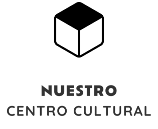

La Paralela.
La Paralela desarrolla proyectos de animación sociocultural, actividades para la dinamización local e iniciativas propias vinculadas a Los Pedroches.
Podemos incorporarnos a un proyecto desde el principio o asumir una parte concreta del trabajo, según lo que necesite cada entidad. La idea es sencilla: hacernos cargo de nuestra parte, mantener una coordinación clara con el personal responsable y facilitar que el proyecto avance.
Además del trabajo en los municipios, contamos con un centro cultural propio en Pozoblanco, equipado y preparado para acoger actividades culturales, sociales y comunitarias en distintos formatos: talleres, espectáculos, encuentros, presentaciones, reuniones y otras iniciativas de pequeño y mediano formato.
Montando cendales desde que éramos chicos.
Empezamos organizando actividades en nuestro pueblo y, con los años, aquello terminó convirtiéndose en nuestro trabajo.
Cendal: palabra de Los Pedroches para referirse a un trasto, un enredo o una cosa que da guerra.
Al frente del proyecto
Manolo Marín
Al frente de La Paralela se encuentra Manolo Marín, Técnico Superior en Animación Sociocultural y licenciado en Arte Dramático, con más de veinte años de experiencia dinamizando la cultura en el entorno rural. Colabora con una red amplia de profesionales especializados, lo que garantiza flexibilidad y una alta calidad en cada proyecto.

En la calle Roble, número 15, de Pozoblanco, tenemos nuestro propio centro cultural: una nave acondicionada donde desarrollamos actividades culturales, sociales y creativas.
Aquí tienen cabida talleres, representaciones teatrales, conciertos, presentaciones, rodajes y grabaciones musicales, además de encuentros de colectivos, actividades de empresas y propuestas infantiles. Son algunos de los formatos que pueden adaptarse al espacio.